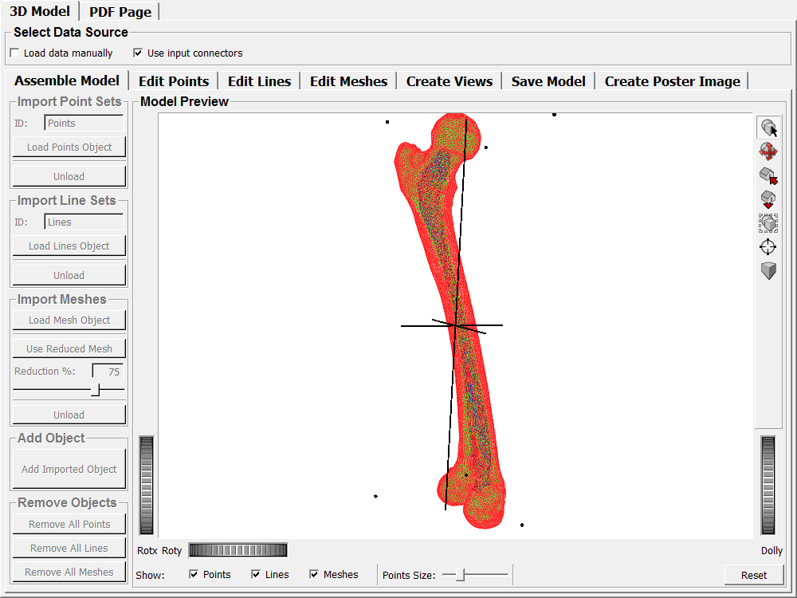
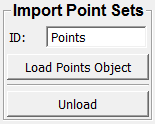
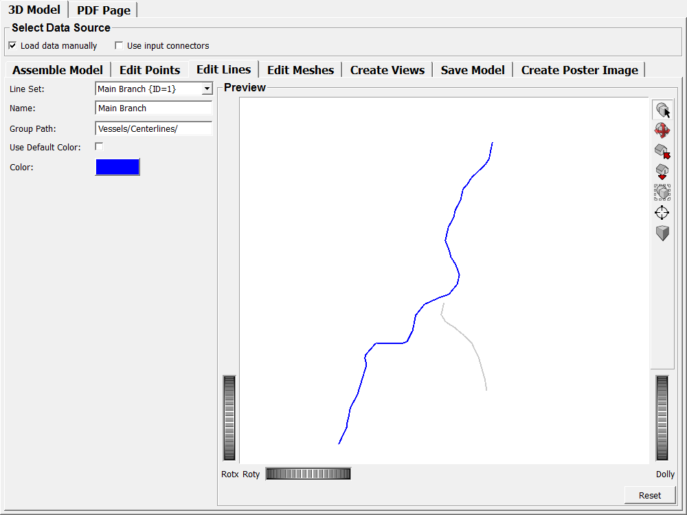
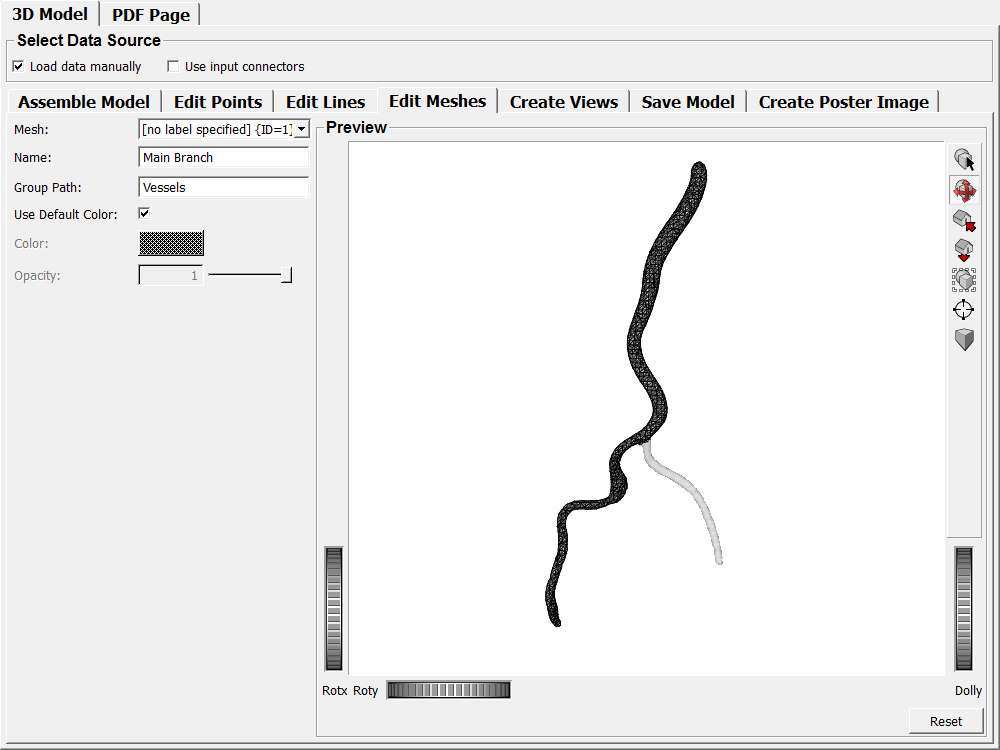
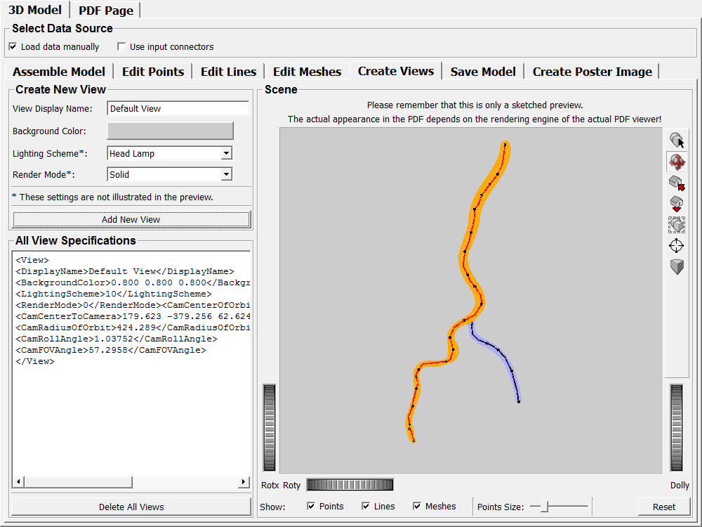
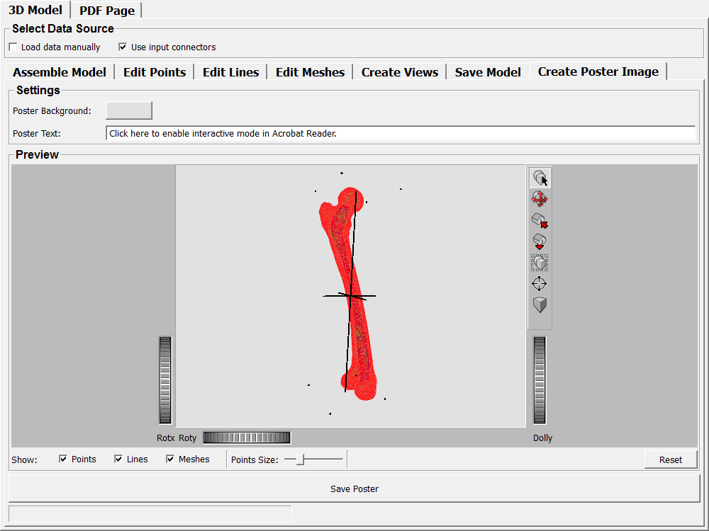

PDF3DFigurePageMacro�
- MacroModule�
authors Axel Newe, axel.newe at fau.de package Community/General definition PDF3DFigurePage.def keywords PDF, U3D, 3D
Purpose�
This module provides an integrated application for creating two types of files:
- U3D files which can be embedded into Portable Document Format (PDF) for creating interactive figures and
- a PDF document with pre-defined layout which includes such an embedded interactive figure.
Usage�
The creation of PDF documents is done entirely on the "PDF Page" tab (see Details section below).
For creating U3D files, there are two approaches:
- connecting input data to the four input connectors or
- assembling the data with the build in assistant (Tab "3D Model" -> Tab "Assemble Model").
The input connectors work as described for the SaveU3D module (see there). Assembling the module by means of the assistant is described in the "Details" section below.
Details�
Creating U3D Model Files�
Universal 3D (U3D) is a compressed file format standard for 3D computer graphics data which is standardized by Ecma International as ECMA-363. This module internally uses the SaveU3D module for creating the U3D files.
Select the "3D Model" tab to create a U3D file.
Input data can be collected in two ways: either by feeding it to the input connectors or by assembling it by means of the built-in assistant. The former way is for experienced MeVisLab users and allows for attaching this macro at the end of a processing chain. Enable the Use Input Connectors checkbox if you want to use this option. In order to assemble the model by means of the built-in assisstant, enable the Load Data Manually checkbox.
Assembling the Model�
Using input connectors
If the Use Input Connectors checkbox is enabled, the model data is loaded from the input connectors and all controls on the Assemble Model tab are disabled. In this case, the Assemble Model tab can only be used to preview the model.
Manual assembly

The model can also be assembled manually by importing each object step-by-step. Go to the Assemble Model tab to assemble the model manually.
Three types of geometries can be imported: point clouds, line sets and meshes.
Each type of geometry has its own box of controls to import. The first step is always to load the object by means of the appropriate Load {Points|Lines|Mesh} Object button. After successfully loading the object, it is shown highlighted in the preview area, while all previously added objects are displayed faded. If you are happy with the object, click Add Imported Model in the Add Object box. It is then permanently added to the model. If you do not want to add a loaded object, click Unload in the appropriate box. All models of a kind can be removed at once by means of the appropriate button in the Remove Objects box. It is not possible to remove a specific object.
Each type of geometry has its specific import options:
Point Set import
Point Sets can be imported from text files, e.g., CSV files. A point set definition shall start with a header which consists of an identifier and a numerical value:
Points 1
The identifier which is used for filtering point sets out of a larger file can be specified by means of the ID field. By default it is "Points".
The header can also have an optional name. Everything after the numerical value is interpreted as name:
Points 1 Anchor Points
The point set definition shall then continue with the coordinates of each point. Each coordinate shall consist of three values (x, y, z) and be listed in a separate line. The values can be separated either by a semicolon (";") or by a space. The decimal delimiter shall be a decimal point ("."):
78.873;-30.2173;-109.254 or 63.9515 -16.5974 -76.5908
A full Point Set definition typically looks like this:
Points 1 Anchor Points
78.873;-30.2173;-109.254
63.9515;-16.5974;-76.5908
41.5693;-7.5175;-54.8151
26.6479;-10.6914;-47.1012
7.99605;-19.9401;-20.2392
Line Set import

Just like Point Sets, Line Sets can be imported from text files (CSV etc.) as well. A Line Set definition shall also start with a header, just like a Point Set definition:
Lines 1 or Lines 1 Centerline
The default identifier for filtering line sets is "Lines".
The Line Set definition shall then continue with two lists: a list of positions and a list of connections.
The list of positions shall be a list of coordinates that define the positions in the model space that are touched by a line. These positions must be specified just like the Point Set positions described above.
The list of connections shall be a list of pairs, where every pair specifies the indices of two positions that are connected by one segment of a line. The pairs must be integer numbers and can be separated either by a semicolon (";") or by a space:
0;1 or 5 8
The numbering of indices starts with "0", so the index of the first position in the positions list is "0". The list of connections can be omitted. If no list of connections is provided, all positions of the list of positions are connected automatically, in order of their appearance.
A full Line Set definition (with three line segments) typically looks like this:
Lines 1 Axes
31 -144 1118
154 -144 1118
92 -209 1118
92 -78 1118
92 -144 899
92 -144 1338
0 1
2 3
4 5
Mesh import
Meshes can be imported from a number of formats. See WEMSceneLoader for a full list of supported formats.

After loading a mesh, the number of faces can be reduced before it is added to the model. Click the Use Reduced Mesh button and adjust the reduction ration by means of the Reduction % field or the slider below the field. (Note that the mesh is updated on-the-fly which can take a while for large meshes. If the update is too slow, use the numerical field instead of the slider.)
Adding the imported object
After importing an object, click the Add Imported Object button in the Add Object box to permanently add the object to the model.
Deleting all objects of a kind
All models of a kind can be removed at once from the model by means of the appropriate button in the Remove Objects box. It is not possible to remove a specific object from the model.
Editing Point Sets�

Go to the Edit Points tab to edit Point Sets.
Point Sets can only be edited as regards their name and their group path in the model object tree.
If no name is specified, the default name "PointSet" is assigned. Names do not have to be unique, and they may contain space characters. For example, two different objects with the name "My Points" are allowed.
The group path specifies the path where the object is placed in the 3D model tree. All necessary sub-branches are created automatically. Path elements must be separated by a slash ("/") character.
Editing Line Sets�
Go to the Edit Lines tab to edit Line Sets.
Line Sets can be edited as regards their name (see above), their group path (see above) and their color.
In order to specify an individual color for a line set, uncheck the Use Default Color option and select the desired color by means of the Color field. The default color is black (RGB 0,0,0).
Note that unselected line sets are rendered in light grey (RBG 0.792,0.792,0.792), so if you assign this color to the active line set, it will not be possible to distinguish it from the other line sets in preview.
Editing Meshes�
Go to the Edit Meshes tab to edit meshes.
In addition to name, group path and color, meshes can also be assigned an opacity value. Meshes with an opacity of 1 will be rendered completely opaque, and meshes with an opacity of 0 will be invisible. The default opacity is 1.
Creating Views�
Go to the Create Views tab to create Views.
A View is a predefined setting that specifies how the objects and the environment shall be rendered.
A view must have a name, which does not need to be unique. However, views with identical names could confuse the consumer of a figure, so they should be avoided.
The most important setting for the view will be the camera setting which is specified directly in the Scene box. You can interactively rotate, pan and zoom the scene in the Scene box and thus select the projection angle. When the View is added (see Add New View button below), the camera settings for the View are calculated from the currently selected projection in the Scene box. (Note that there might be tiny deviations due to floating point tolerance. However, this usually affects only very small objects.)
In addition to the camera, a Background Color, a Lighting Scheme and a Render Mode can be specified. (Note that the appearance of the latter 2 strongly depends on the PDF rendering engine and that they are therefore not illustrated in the Scene preview.)
The Lighting Scheme specifies the ambient light which is use to illuminate the scene. See the PDF specification (http://www.adobe.com/content/dam/Adobe/en/devnet/acrobat/pdfs/pdf_reference_1-7.pdf, section 9.5.3, p. 817) for details.
The Lighting Scheme specifies how objects are rendered. See the PDF specification (http://www.adobe.com/content/dam/Adobe/en/devnet/acrobat/pdfs/pdf_reference_1-7.pdf, section 9.5.3, p. 813) for details (or just try them...).
After all settings have been done, click the Add New View button to add the specified View to the list of all views. An arbitrary number of views can be added, but remember that they should have unique names. Once added, the Views can still be edited manually in the All View Specifications box, but this should only be done very carefully, especially as regards the camera parameters.
In order to delete all views, click the Delete All Views button. In order to delete a single View, remove it manually by means of the All View Specifications box.
If no view is specified, the PDF generator will create a default view.
Saving the Model to U3D�

In order to finally save the U3D file, click the Save Model button on the Save Model tab. This will open a dialog where you can select a file name. If the selected file name does not have an ".u3d" extension, this extension will be added automatically. Click the Save button of the dialog to save the U3D file.
For your convenience, the selected file name will automatically be added to the respective field on the PDF Page specification tab.
Creating Poster Images�
PDFs allows for replacing 3D figures with a "poster image" that is displayed if the 3D figure is deactivated or if the reader software is not capable of rendering 3D scenes. In order to create such a poster image in PNG format, go to the Create Poster Image tab, select the Poster Background color and a Poster Text, which shall be superimposed. (Note that the poster text is not displayed in the Preview box.)
Then, adjust the scene in the Preview box, select the objects to show an the Points Size.
Finally, click Save Poster. This will open a dialog where you can select a file name. If the selected file name does not have an ".png" extension, this extension will be added automatically. Click the Save button of the dialog to save the poster image file.
For your convenience, the selected file name will automatically be added to the respective field on the PDF Page specification tab.
Editing the PDF Page�
In order to create a PDF file with an embedded 3D figure, go to the PDF Page tab.

Each PDF page created by this module consists of three part: a header, the interactive figure itself and the figure description.
Page Header
The page header consists of a Header Citation Text and a Header Headline Text.
The Header Citation Text is displayed on top of the page and should usually contain information about the article to which the PDF is related to. Alternatively, this line could also contain information about the authors, their institution or something similar. However, the text should fit in three lines, because everything else will be truncated.
The is displayed in large, bold font below the Header Citation Text and should be rather short since it must fit in one line. (The actual Caption of the figure has its own field, see below.)
The page header can be complemented by a pre-defined instructional text which explains how to use the interaction features in Adobe Reader. Enable the Include instructional hints above the figure checkbox to include these instructions.
3D Figure
The actual 3D figure will be included below the Header Headline Text or the instructional text, respectively. It will have a fixed 4:3 ratio. The U3D file which shall be included can be specified by means of the U3D Filename field. this field is mandatory - if no U3D file is specified, it will not be possible to create a PDF.
The poster image which shall be displayed if the 3D figure is deactivated or if the reader software is not capable of rendering 3D scenes can be specified by means of the Poster Image Filename field. This field is not mandatory and can be left empty. If no poster image is provided, the default text of the reading software will be displayed.
(The two filename fields will be pre-configured if you have previously used the macro to create the U3D file and/or the poster image file.)
Besides the file names, 5 options can be configured:
- Activation Mode: Specifies whether the 3D figure shall be activated manually or automatically.
- Deactivation Mode: Specifies whether the 3D figure shall be deactivated manually or automatically.
- Toolbar Enabled: Specifies whether the 3D toolbar shall be visible if the 3D figure is enabled.
- Navigation Interface Enabled: Specifies whether the navigation interface shall be visible if the 3D figure is enabled. The navigation interface enables the consumer of a PDF to interactively select which objects of the 3D figure shall be displayed.
- Animation Autostart: Specifies whether animations shall be started automatically if the 3D figure is enabled. (Note that the creation of animations is not possible with this version. This switch only affects external U3D files with pre-defined animations.)
Description
Each 3D figure is described by a Caption and a Description.
The Caption will be rendered in bold font and shall be rather short since it must fit in one line.
The length of the Description (which will be rendered in normal text) is only limited by the remaining space of the page. It can include line breaks.
The following image shows an example of a complete PDF page with an active 3D figure as rendered by the Adobe Reader XI.

Tips�
- Very small objects may cause trouble as regards the calculation of View properties. This is caused by floating point tolerance: the internal calculation is much more precise than the renderer in Adobe Acrobat. However, this should only apply for very tiny objects, so if this problem occurs, try to scale up all objects.
- If no view is specified, the PDF generator will create a default view. However, in the current version this is only possible if the U3D file was created with this module.
Input Fields�
Parameter Fields�
Field Index�
Visible Fields�
Show Points Previe Size�
- name: showPointsPrevieSize, type: Float, default: 2, minimum: 0, maximum: 10�
Lighting Scheme*�
- name: viewLightingScheme, type: Enum, default: HeadLamp�
Values:
| Title | Name |
|---|---|
| None | None |
| White | White |
| Day | Day |
| Night | Night |
| Hard | Hard |
| Primary | Primary |
| Blue | Blue |
| Red | Red |
| Cube | Cube |
| CAD | CAD |
| Head Lamp | HeadLamp |
Render Mode*�
- name: viewRenderMode, type: Enum, default: Solid�
Values:
| Title | Name |
|---|---|
| Solid | Solid |
| Solid Wireframe | SolidWireframe |
| Transparent | Transparent |
| Transparent Wireframe | TransparentWireframe |
| Bounding Box | BoundingBox |
| Transparent Bounding Box | TransparentBoundingBox |
| Transparent BB Outline | TransparentBoundingBoxOutline |
| Wireframe | Wireframe |
| Shaded Wireframe | ShadedWireframe |
| Hidden Wireframe | HiddenWireframe |
| Vertices | Vertices |
| Shaded Vertices | ShadedVertices |
| Illustration | Illustration |
| Solid Outline | SolidOutline |
| Shaded Illustration | ShadedIllustration |
Use Default Color (selectedWEMPatchUseDefaultColor)�
- name: selectedWEMPatchUseDefaultColor, type: Bool, default: TRUE�
Use Default Color (selectedLineSetUseDefaultColor)�
- name: selectedLineSetUseDefaultColor, type: Bool, default: TRUE�